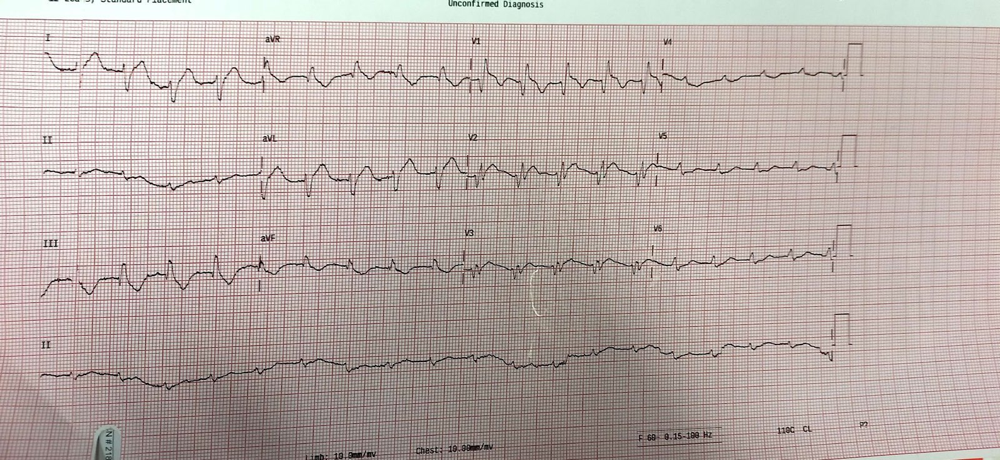
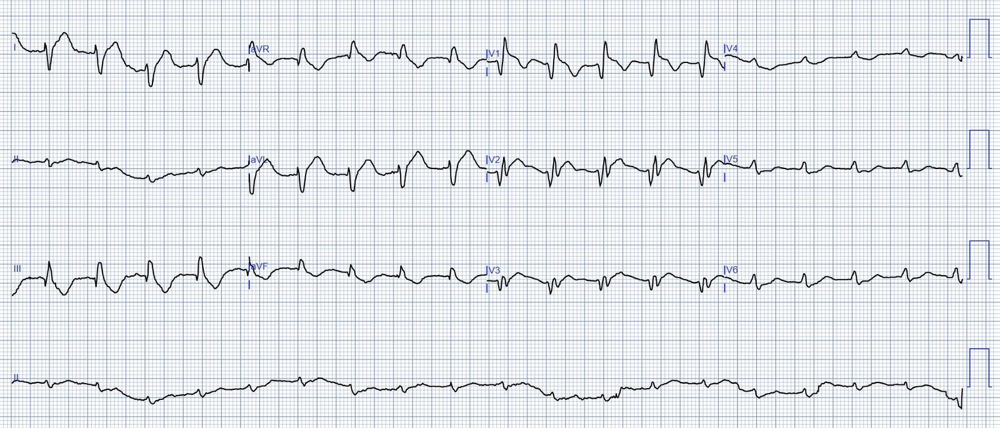
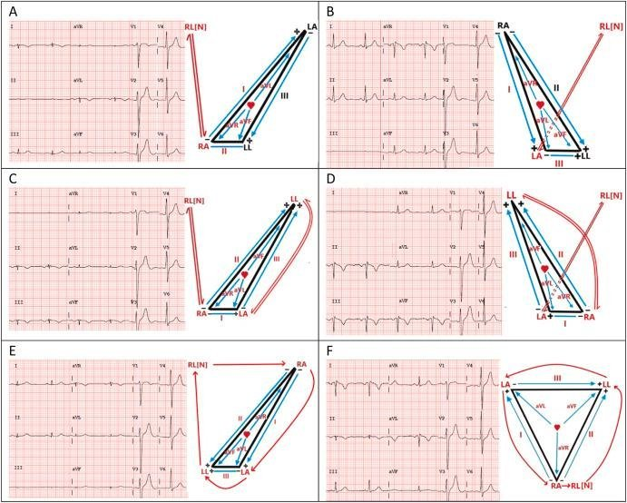
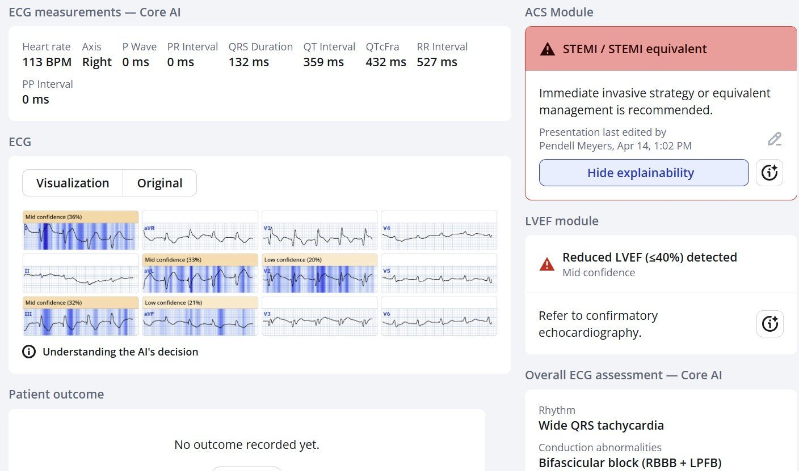
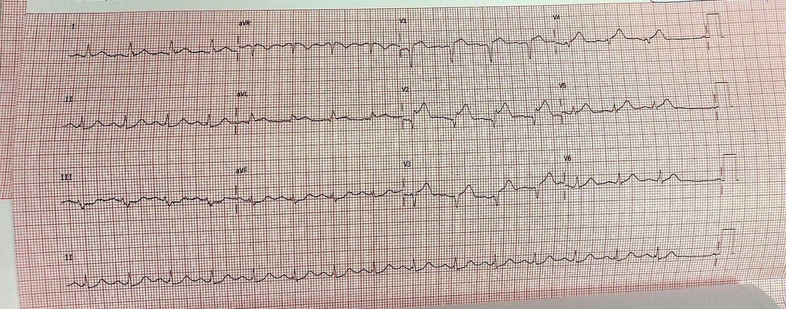
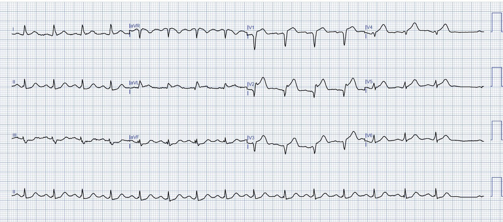
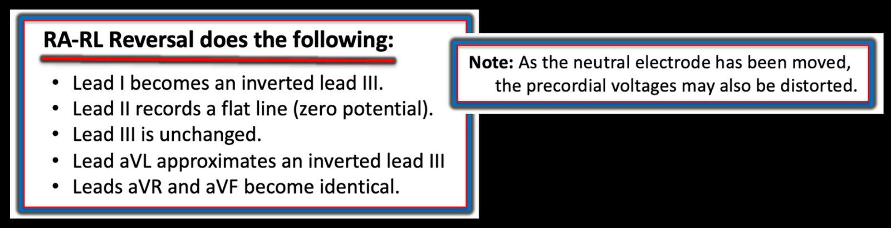
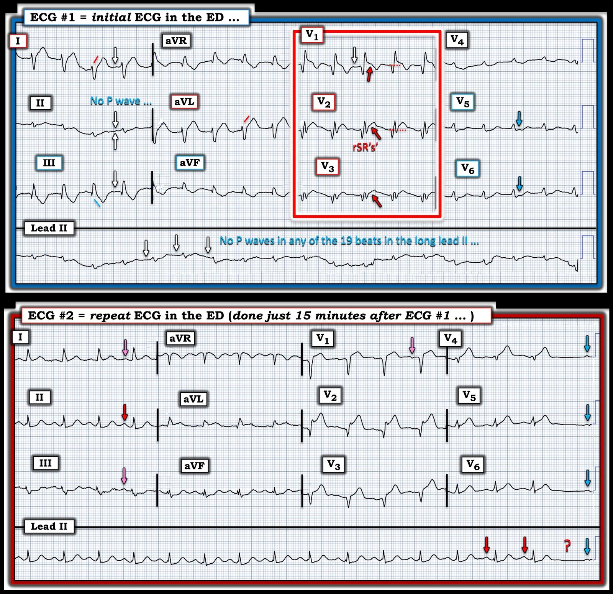

16/04/2025 — Bạn có muốn xem điện tâm đồ này khi không có blốc nhánh phải không? Chẩn đoán của bạn có thay đổi không?
Bản dịch tiếng Việt của bài "Would you like to see this ECG without the Right Bundle Branch Block? Would your diagnosis change?" – Dr. Smith’s ECG Blog. Giữ nguyên toàn bộ 9 hình ảnh của bản gốc.
Người gửi giấu tên, Pendell Meyers viết
Một phụ nữ khoảng 40 tuổi, không có bệnh đồng mắc đã biết, đến viện vì đau ngực cấp lan lên cánh tay trái và cổ, khởi phát khoảng 4 giờ trước khi đến. Các dấu hiệu sinh tồn được ghi nhận là trong giới hạn bình thường, trừ nhịp tim nhanh.
Đây là điện tâm đồ đầu tiên của bệnh nhân lúc đến viện:




Bạn nghĩ gì?
Bất kỳ ai đã đọc blog này đều hiểu ý nghĩa đáng sợ của điện tâm đồ này: nó chẩn đoán tắc cấp đoạn gần LAD. Có RBBB và ST chênh lên (STE) đồng hướng ở V1-V3, kèm ST chênh xuống (STD) soi gương ở V5-6 (“xoáy trước tim” – precordial swirl), cùng sóng T tối cấp ở I và aVL, với HATW âm soi gương ở III và aVF. OMI thành trước-bên, nhiều khả năng kèm RBBB do thiếu máu cục bộ cấp, tất cả đều do OMI đoạn gần LAD.
Ghi chú bên lề: tôi nghĩ nhịp có lẽ là nhịp nhanh xoang, nhưng tôi không dễ gì chỉ ra được các sóng P xoang. (Xem bình luận của Ken Grauer bên dưới để có thêm phần diễn giải nhịp ở ca này!).
________
Ngoài ra:
Đảo điện cực!
Jose Alencar đã nhận ra một điều ở đây: có đảo điện cực Tay phải/Chân phải (Right Arm/Right Leg). Sự đảo điện cực này làm chuyển đạo II phẳng (gần như hoặc hoàn toàn đẳng điện), làm chuyển đạo I giống aVL và chuyển đạo aVF giống aVR.
Nếu không có sự đảo điện cực này, QRS sẽ chủ yếu âm ở các chuyển đạo dưới và dương ở aVL.
Tôi (Smith) đã chờ đợi sẽ thấy blốc phân nhánh trái trước (Left Anterior Fascicular Block, LAFB) nhưng lại không thấy, và sự đảo điện cực này – điều tôi đã không nhận ra – giải thích vì sao. (Để biết thêm về sự đảo điện cực này — xem Bình luận của KG trong Phần bổ sung bên dưới).


________________
Đây là kết quả đọc của Queen of Hearts, đọc đúng là tương đương STEMI, làm nổi bật các chuyển đạo trước và bên bằng khả năng giải thích (explainability), và thậm chí còn phát hiện phân suất tống máu thất trái (LVEF) giảm. Bất kỳ ai đã gặp và nghiên cứu bệnh nhân OMI đều biết rằng bệnh nhân này, với hình ảnh LAD đoạn gần, kèm RBBB do thiếu máu cục bộ có nguy cơ cực cao, và nhịp nhanh, đang bị sốc tim cho đến khi chứng minh được điều ngược lại. Hình ảnh này có tỷ lệ tử vong rất cao.


Bác sĩ cấp cứu đã liên hệ ngay với bác sĩ tim mạch để đề nghị kích hoạt phòng thông tim.
Bác sĩ tim mạch cho rằng điện tâm đồ không cho thấy dấu hiệu STEMI mà là NSTEMI, khuyên làm các điện tâm đồ liên tiếp và troponin nhiều lần, rồi hủy yêu cầu kích hoạt.
Khoảng 15 phút sau, điện tâm đồ được ghi lại:




Thật may mắn cho bệnh nhân, có một khoảng thời gian ngắn nhánh phải (Right Bundle Branch, RBB) dẫn truyền được, cho phép bác sĩ tim mạch nhìn thấy cùng tình trạng đó mà không bị RBBB làm phức tạp. Khi không có RBBB, tôi nghĩ gần như ai cũng sẽ gọi đây là “STEMI.” May mắn cho bệnh nhân, lúc này bác sĩ tim mạch đã đồng ý rằng bà ấy đang bị “STEMI” và đồng ý chụp mạch vành.
Chụp mạch vành cho thấy tắc huyết khối 100% ở lỗ xuất phát (ostial) LAD, và đã được tái thông.
Siêu âm tim cuối ngày hôm đó cho thấy EF 35%, với rối loạn vận động thành nặng ở thành trước và mỏm.
Troponin tăng nhanh nhưng không được đo tới đỉnh.
Bệnh nhân sống sót qua đợt nằm viện, nhưng không có dữ liệu về kết cục lâu dài.
Bàn luận:
Bệnh nhân này rất may mắn vì có một bác sĩ hiểu được điện tâm đồ ban đầu của bà, đã lên tiếng bảo vệ quyền lợi cho bà, đã làm các điện tâm đồ liên tiếp, và các điện tâm đồ liên tiếp ấy lại tình cờ có một lúc tạm thời không còn RBBB, giúp giảm độ phức tạp khi diễn giải thiếu máu cục bộ. Kết quả là ở ca may mắn này chỉ chậm trễ khoảng 15 phút. Nhiều bệnh nhân không được may mắn như vậy. Tôi mong tất cả bác sĩ cấp cứu và bác sĩ tim mạch đều học được hình ảnh này và ý nghĩa của nó, nhưng đó đơn giản không phải là thế giới chúng ta đang sống hiện nay, với mô hình STEMI. Tôi được khích lệ bởi những người như người đã gửi cho tôi ca này, và tôi hy vọng AI sớm có thể giúp lấp khoảng trống này.
Xem một số trong rất nhiều bài liên quan của chúng tôi về hình ảnh chết người này:
One of those ECGs you need to instantly recognize, which learners may struggle with at first (Một trong những điện tâm đồ bạn cần nhận ra ngay lập tức, mà người học có thể lúng túng lúc đầu)
Acute chest pain, right bundle branch block, no STEMI criteria, and negative initial troponin. (Đau ngực cấp, blốc nhánh phải, không đủ tiêu chuẩn STEMI, và troponin ban đầu âm tính.)
An elderly woman with acute vomiting, presyncope, and hypotension, and a wide QRS complex (Một phụ nữ lớn tuổi nôn cấp, tiền ngất, tụt huyết áp, và phức bộ QRS rộng)
A man in his 40s who really needs you to understand his ECG (Một người đàn ông khoảng 40 tuổi thực sự cần bạn hiểu điện tâm đồ của anh ấy)
Cardiac Arrest at the airport, with an easy but important ECG for everyone to recognize (Ngừng tim ở sân bay, với một điện tâm đồ dễ nhưng quan trọng mà ai cũng cần nhận ra)
A woman in her 60s with 6 hours of chest pain, dyspnea, tachycardia, and hypoxemia (Một phụ nữ khoảng 60 tuổi đau ngực 6 giờ, khó thở, nhịp nhanh và giảm oxy máu)
Ventricular Fibrillation, ROSC after perfusion restored by ECMO, then ECG. Protocols can be overridden by Physician Judgment. (Rung thất, ROSC sau khi tưới máu được khôi phục bằng ECMO, rồi điện tâm đồ. Phác đồ có thể được gạt sang một bên bởi phán đoán của bác sĩ.)
What is the Diagnosis in this 70-something with Chest Pain? (Chẩn đoán là gì ở bệnh nhân khoảng 70 tuổi bị đau ngực này?)
68 minutes with chest compressions, full recovery. Plus recommendations from a 5-member panel on cardiac arrest. (68 phút ép ngực, hồi phục hoàn toàn. Kèm khuyến nghị của một nhóm 5 thành viên về ngừng tim.)
A deadly alcohol binge: a man in his 30s with chest pain and initial high sensitivity troponin I within normal limits (Một cuộc nhậu chết người: người đàn ông khoảng 30 tuổi đau ngực, troponin I độ nhạy cao ban đầu trong giới hạn bình thường)
Resuscitated from ventricular fibrillation: what is the ECG Diagnosis? (Được hồi sức sau rung thất: chẩn đoán điện tâm đồ là gì?)
A man in his 80s with chest pain (Một người đàn ông khoảng 80 tuổi đau ngực)
What, besides large anterior STEMI, is so ominous about this ECG? (Ngoài STEMI thành trước diện rộng, điều gì ở điện tâm đồ này đáng ngại đến vậy?)
Chest Pain and Right Bundle Branch Block (Đau ngực và blốc nhánh phải)

===================================
Xin LƯU Ý — Tôi thêm Phần bổ sung này sau khi đã viết Bình luận của tôi ở bên dưới. Tôi vẫn còn băn khoăn về nhịp trong điện tâm đồ ban đầu của ca hôm nay — nhịp này thậm chí có thể là nhịp xoang (như Dr. Meyers nghi ngờ) — nhưng tiếc là chúng ta không có cách nào biết được chuyển đạo II lẽ ra sẽ cho thấy gì nếu các điện cực chi được đặt đúng.
===================================
PHẦN BỔ SUNG (ngày 16 tháng Tư năm 2024):
Tôi rất thích các ca đảo điện cực — và cùng với các đồng nghiệp cộng tác viên của Dr. Smith’s ECG Blog, chúng tôi đã chỉ ra rất nhiều “sự cố kỹ thuật” (technical misadventures) như vậy trong số các ca được gửi đến (Xem DANH SÁCH ở cuối phần Bình luận của tôi trong bài ngày 6 tháng Một năm 2024 trên Dr. Smith’s ECG Blog).
- Dù đã nói vậy — tôi đã bỏ sót sự đảo điện cực RA-RL trong bài hôm nay!
- Y học khiến ta khiêm tốn. Đúng lúc ta nghĩ mình đã “làm chủ” một bệnh cảnh lâm sàng — ta lại bị “kéo về mặt đất” bởi một điều mình bỏ sót. Cách tiếp cận TỐT NHẤT là học từ điều này.
Vì sao tôi bỏ sót sự đảo điện cực hôm nay:
- Tôi biết rằng sự hiện diện của một đường phẳng ở bất kỳ chuyển đạo chuẩn nào (I,II,III) — là dấu hiệu ngay lập tức của một kiểu đảo điện cực nào đó (Xem Bình luận của tôi trong bài ngày 12 tháng Mười năm 2024). Nhưng cho tới giờ — tôi đã không nhận thức được rằng một đường gần như phẳng (như trong bài hôm nay) cũng mang ý nghĩa tương tự. Giờ thì tôi đã rõ hơn.
- Như mọi khi — tài liệu tham khảo “tra nhanh” trực tuyến yêu thích của tôi về các kiểu đảo điện cực thường gặp nhất là từ LITFL ( = Life-In-The-Fast-Lane). Tôi đã dùng trang web tuyệt vời mà họ đăng trên website của mình về chủ đề này trong nhiều năm. Rất DỄ tìm — Chỉ cần gõ “LITFL Lead Reversal” vào thanh Tìm kiếm — và đường link hiện ra ngay.
- Bên dưới, trong Hình A — là phần tóm tắt từ trang LITFL này về những gì xảy ra khi đảo điện cực RA-RL. Tiếc là — theo những gì tôi biết, không có cách nào với đảo điện cực RA-RL để suy ra điện tâm đồ ban đầu hôm nay lẽ ra sẽ cho thấy gì nếu các điện cực chi được đặt đúng vị trí.
- Có lẽ — Chúng ta sẽ thấy LAHB (blốc phân nhánh trái trước – Left Anterior HemiBlock) — đúng như Jose Alencar nghi ngờ! Điều này tất nhiên hoàn toàn hợp lý khi xét đến hình ảnh “Xoáy” (Swirl) do tắc cấp đoạn gần LAD trong ca hôm nay (tức là, RBBB/LAHB là biến chứng rất thường gặp của OMI cấp đoạn gần LAD! ).
- Có thể — Chúng ta đã có thể thấy sóng P xoang. Cũng có thể không. Nếu điện tâm đồ #1 là nhịp nhanh xoang — tôi vẫn sẽ chờ đợi thấy sóng P ở một số chuyển đạo khác. Nhưng tiếc là chúng ta sẽ không bao giờ biết được câu trả lời — và luận điểm của tôi trong phần Bình luận của tôi bên dưới vẫn đứng vững — rằng chúng ta cần luôn nhìn chuyển đạo II trước tiên để xem có hay không có sóng P dương.
- Những điểm cần học cho bản thân tôi: Một đường gần như phẳng ở bất kỳ chuyển đạo chuẩn nào có thể là dấu hiệu đảo điện cực. Đặc biệt khi có một đường gần như phẳng — việc không có sóng P ở chuyển đạo II (và ở mọi chuyển đạo khác) nên thúc đẩy chúng ta xem lại để tìm một trong các kiểu đảo điện cực có thể có. Xin cảm ơn Jose Alencar vì “mắt đại bàng” của anh ấy!


============================
LƯU Ý: (ngày 16 tháng Tư năm 2024):
— Phần bên dưới là những gì tôi đã viết trước hôm nay (và trước khi tôi viết Phần bổ sung ở trên).
============================
===================================
BÌNH LUẬN CỦA TÔI, bởi KEN GRAUER, MD (15/4/2025):
===================================
Tôi bị cuốn hút bởi 2 điện tâm đồ trong ca hôm nay.
- Để rõ ràng, trong Hình 1 — tôi đã đưa lại các phiên bản PMcardio của 2 bản ghi này. Để tiện so sánh — tôi đặt cả hai bản ghi cùng nhau trong hình này.
Dr. Meyers nhấn mạnh các đặc điểm MẤU CHỐT của ca hôm nay — cụ thể là, ở người phụ nữ khoảng 40 tuổi này bị CP (đau ngực – Chest Pain) mới khởi phát — điện tâm đồ ban đầu (bản ghi TRÊN CÙNG trong Hình 1) có giá trị chẩn đoán OMI LAD cấp, cần thông tim và PCI kịp thời.
- Lẽ ra bác sĩ tim mạch trực không được bỏ sót chẩn đoán này.
- May mắn là điện tâm đồ đã được ghi lại chỉ 15 phút sau đó (bởi một bác sĩ cấp cứu tinh ý) — và bản ghi thứ 2 đã được bác sĩ tim mạch nhận định đúng là STEMI cấp, cần thông tim kịp thời.
- Trong quá trình đó — tôi tin rằng nhịp tim ban đầu (ở điện tâm đồ #1) đã bị bỏ qua.
- Xin nhấn mạnh: Bất kể nhịp tim ban đầu là gì — bệnh nhân bị CP mới này đang trong quá trình tiến triển OMI LAD cấp, cần tái tưới máu kịp thời bằng PCI (điều có lẽ cũng sẽ khắc phục được nhịp ban đầu nếu nó còn kéo dài). Dù vậy — mục tiêu của tôi là đưa ra thêm một góc nhìn về một số điểm tinh tế-nhưng-quan trọng hơn mà 2 bản ghi này thể hiện.
- Cảnh báo: Phần sau đây là một “lặn sâu” vào nhịp tim của điện tâm đồ #1. Hy vọng của tôi với những ai đồng hành cùng tôi tới cuối, là truyền đạt một sự khôn ngoan đơn giản: việc thêm 5 giây có chủ đích vào thói quen đọc điện tâm đồ của bạn có thể ngăn được sự bỏ sót nhịp như minh họa trong ca hôm nay.
Nhịp ban đầu có phải nhịp xoang không?
Theo định nghĩa — một nhịp đều có cơ chế xoang khi sóng P dương ở chuyển đạo II. Lý do là sự lan truyền của mặt sóng khử cực, khi đi từ nút SA đến nút AV — có hướng gần với +60 độ trên mặt phẳng trán (với +60 độ tương ứng với vị trí trục điện của chuyển đạo II ).
- Nếu sóng P không dương ở chuyển đạo II — thì đó không phải nhịp xoang.
- Quy tắc này chỉ có 2 ngoại lệ: i) Có tim sang phải; hoặc, ii) Có đảo điện cực.
- Dù đúng là đôi khi sóng P trong nhịp xoang có thể có biên độ rất thấp — nhưng vẫn phải có sóng P.
Nhịp ở điện tâm đồ #2 rõ ràng là nhịp xoang (với tần số ~95-100/phút) — vì luôn thấy một sóng P dương, rõ ràng với khoảng PR hằng định (mũi tên ĐỎ ở chuyển đạo II). Ở các chuyển đạo khác thấy những sóng P nhỏ hơn với hình thái khác (các mũi tên HỒNG).
- Ngược lại — Không thấy sóng P nào ở điện tâm đồ #1. Các mũi tên TRẮNG đánh dấu chỗ mà ta sẽ thấy sóng P xoang nếu chúng có mặt (Lưu ý rằng không có dấu hiệu sóng P nào ở bất kỳ nhát nào trong 19 nhát của dải nhịp chuyển đạo II dài).
- Cũng cần lưu ý — Nếu có thay đổi thì khoảng PR sẽ ngắn lại khi nhịp nhanh. Do đó — NẾU có sóng P xoang ở điện tâm đồ #1 — chúng sẽ không bị che khuất trong đoạn ST đi trước, trừ khi có blốc độ 1 rất dài (điều rất khó xảy ra, vì nhịp xoang chắc chắn với khoảng PR bình thường ở điện tâm đồ #2 được ghi chỉ 15 phút sau đó). Vì vậy — nhịp ở điện tâm đồ #1 không phải nhịp xoang.
Vậy nhịp ở điện tâm đồ #1 là gì?
Nói ngắn gọn — tôi không biết.
- Điều chúng ta có biết — là nhịp ở điện tâm đồ #1 đều với tần số ~115/phút — với QRS rộng (biểu hiện dạng dẫn truyền RBBB) — nhưng không có bất kỳ dấu hiệu nào của hoạt động nhĩ.
- Nhịp đều giúp loại trừ AFib.
- Đặc biệt khi có trục lệch phải rõ (dạng rS ở chuyển đạo I với phần âm chiếm ưu thế) — tôi đã cân nhắc VT phân nhánh (fascicular VT).
- Các phần lệch đầu tiên hẹp của QRS ở nhiều chuyển đạo gợi ý nhiều khả năng nhịp này phát ra từ đâu đó trong hệ thống dẫn truyền (tức là, nhịp nhanh bộ nối?; nhịp His gia tốc?).
- Đặc biệt khi dạng dẫn truyền RBBB biến mất 15 phút sau, lúc tần số tim đã chậm lại từ ~115/phút xuống 95-100/phút như thấy ở điện tâm đồ #2 — thì dẫn truyền lệch hướng liên quan tần số của một nhịp trên thất có vẻ là khả năng đáng đặt cược. Dù vậy — phức bộ QRS đẳng điện rất nhỏ ở chuyển đạo II của điện tâm đồ #1, và hình thái rSR’s’ 4 pha rất bất thường ở chuyển đạo V2 là không điển hình cho dẫn truyền lệch hướng.
- Điều cốt lõi: Tôi không chắc chắn về chẩn đoán nhịp ở điện tâm đồ #1. Linh cảm của tôi là nhịp nhanh bộ nối kèm dẫn truyền lệch hướng liên quan tần số — nhưng bất kể nhịp ở điện tâm đồ #1 là gì, chừng nào bệnh nhân còn ổn định huyết động — thông tim kịp thời kèm PCI là điều trị được lựa chọn cho cả nhồi máu cơ tim cấp lẫn nhịp nhanh.
Làm thế nào để không bỏ sót chẩn đoán nhịp này: Trong 45 năm giảng dạy đọc điện tâm đồ của tôi — sơ suất phổ biến nhất mà tôi gặp (kể cả ở những bác sĩ lâm sàng giàu kinh nghiệm) — là không dành ra 3-5 giây có chủ đích ngay đầu mỗi lần đọc để nhìn nhanh phía trước mỗi phức bộ QRS ở dải nhịp chuyển đạo II dài.
- Có sóng P dương với khoảng PR hằng định phía trước mỗi phức bộ QRS ở dải nhịp chuyển đạo II dài không? Nếu không — thì nhịp không phải nhịp xoang (giả định không có đảo điện cực hay tim sang phải).
- Chỉ cần luyện tập chút ít — tất cả những gì cần là 3 đến 5 giây để quét nhanh chuyển đạo II dài. Sau khi làm vậy — bạn có thể chuyển sự chú ý sang điện tâm đồ 12 chuyển đạo.


“Xoáy” trước tim (Precordial Swirl) kèm dẫn truyền RBBB:
Chúng ta ghi nhận công đặt ra thuật ngữ “Xoáy trước tim” (Precordial Swirl) thuộc về BS. Meyers và BS. Smith (Xem bài ngày 15 tháng Mười năm 2022 trên Dr. Smith’s ECG Blog). Cách gọi tinh tế này giúp nhận ra tắc LAD (thường ở đoạn gần so với nhánh xuyên vách thứ 1) ở vị trí rất gần — dẫn đến thiếu máu cục bộ vách bên cạnh tổn thương thành trước và mỏm.
- Bất kể nhịp ở điện tâm đồ #1 rốt cuộc là gì — chẩn đoán “Xoáy” vẫn chắc chắn vì có ST chênh lên ở các chuyển đạo trước, bắt đầu từ chuyển đạo V1, kèm ST dẹt và chênh xuống ở các chuyển đạo ngực bên V5,V6.
- Dù là dẫn truyền RBBB hay VT phân nhánh — hình dạng ST bất thường và ST chênh lên hiện rõ ở các chuyển đạo V1,V2,V3 của điện tâm đồ #1 đơn giản là không nên có. (Hãy nhớ rằng bình thường khi dẫn truyền RBBB — các chuyển đạo ngực trước phải cho thấy ST-T chênh xuống chứ không phải chênh lên như ta thấy ở đây! ).
- Các sóng Q sâu và rộng ở chuyển đạo V1 và V3 (và gần như cả ở chuyển đạo V2) — gợi ý đã có tổn thương đáng kể.
Điều tò mò cuối cùng:
Bạn có để ý khoảng ngưng ngắn kỳ lạ xuất hiện ở ngay cuối điện tâm đồ #2 không?
- Dù ban đầu tôi nghĩ đường thẳng ở cuối dải chuyển đạo II dài của điện tâm đồ #2 là do một sự cố kỹ thuật nào đó (dấu hỏi ĐỎ) — sự hiện diện của thứ trông như một sóng P xuất hiện ngay trước xung chuẩn (các mũi tên XANH LAM ở điện tâm đồ #2) khiến tôi nghi ngờ nhận định ban đầu này — đặc biệt khi đang có nhồi máu trước vách lan rộng tiến triển cấp tính, mà chỉ vài phút trước đó, ở điện tâm đồ #1, đã biểu hiện dẫn truyền RBBB với trục lệch phải rõ.
- Điều cốt lõi: Dù tôi vẫn nghi khoảng ngưng ngắn ở cuối điện tâm đồ #2 là do một sự cố kỹ thuật — nhưng trong bối cảnh lâm sàng nhồi máu cơ tim trước vách lan rộng đang diễn tiến, việc theo dõi sát nhịp để bảo đảm đây không phải khởi đầu của blốc Mobitz II có lẽ là cần thiết.